Creative
Lab.
Small and bigger experiments for the fun of making things. Ideas start from posts I bookmark on X.
-
18
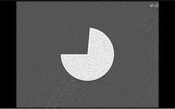
Dither BoothA 1-bit photo booth: Atkinson, Floyd–Steinberg, Bayer or halftone, single shots or a four-frame strip for a receipt printer. camera · print -
17
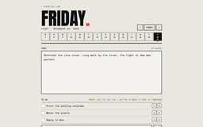
Daily PageOne page a day: open it and type. Unfinished tasks swipe to tomorrow. Stays on your device. journal · daily -
16
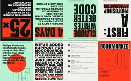
Bookmark ZineSix X bookmarks as an eight-page zine: one sheet, one cut, folded by hand. Pages set by the Poster Machine. print · zine -
15
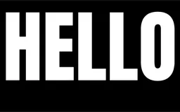
Light BrushPaint text, parking arcs or images in the air: the phone plays them slice by slice during a long exposure. light · photo -
14
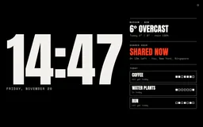
Desk DisplayA kiosk for an old phone or e-reader: clock, weather, shared hour and tap-to-log habits. Dims at night. kiosk · ambient -
13
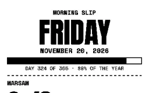
Morning SlipA daily receipt: weather, Tap Log streaks, today's shared hour and a prompt. 1-bit, thermal-printer width. print · daily -
12
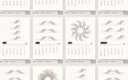
Parking CalendarA year of Perfect Parking plots, one per month, seeded by the date. Prints to PDF, plots from SVG. plotter · print -
11
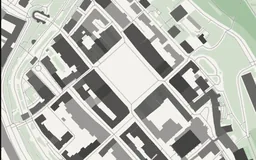
City ScoreA city block played as music: buildings ring as a playhead sweeps the map. Loops live, saves WAV. maps · audio -
10
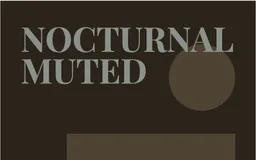
MoodboardFive paintings pooled into one palette, a mood, a type pairing and a poster. Colour maths, no AI. colour · type -
09
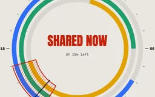
Shared HourA 24-hour clock that finds the hours everyone in different time zones is awake. time · svg -
08
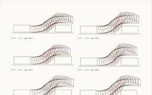
Perfect ParkingSimulated parallel-parking sweeps as pen-plotter drawings, three layouts, layered SVG in millimetres. plotter · svg -
07
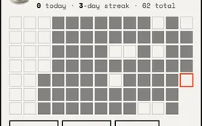
Tap LogNFC stickers around the house: tap to log a habit and open a playlist. Streaks, heatmaps, QR fallback. nfc · habits -
06
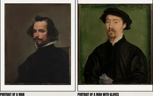
Painted TwinYour photos matched to 650 public-domain paintings by composition, in the browser. images · matching -
05
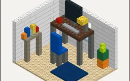
Brick RoomRooms as buildable brick models: a desk corner and a whole flat, with a printable instruction booklet and a parts order. bricks · canvas -
04
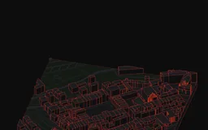
Street DioramaAny place on Earth as an isometric block at real building heights, four print styles. maps · canvas -
03
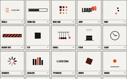
Loader a DayThirty days of loading animations in pure HTML and CSS, each one copyable. css · motion -
02
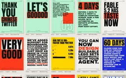
Poster MachineX bookmarks reprinted as brutalist posters, five layouts, seven inks, PNG export. canvas · type -
01
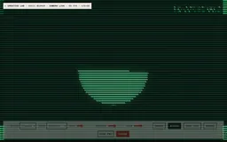
ASCII MirrorWebcam to live ASCII art with glow, six glyph sets and five color modes. Records 5-second clips as GIF, video or a terminal animation. webcam · canvas